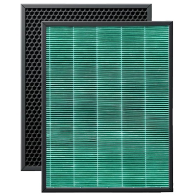

Фильтр Green HEPA CARBON A500
Универсальная система очищения воздуха
Подходит для всех воздухоочистителей BORK серии Aircraft(A500,A501, A700, A701,A704, A800).
(в модели А500 и А800 устанавливается только Green HEPA CARBON; в модели A700, A701можно установить дополнительно любой специальный фильтр)
Комплекс эффективных систем очищения
Система сочетает в себе фильтр тонкой очистки True HEPA H13, созданный из стерильного материала с пропиткой из натуральных экстрактов для уничтожения вирусов и бактерий, и угольный фильтр для удаления вредных газов и запахов. Подходит для эффективной работы воздухоочистителей A500, A501, A700, A704 и A800 в течение 12 месяцев.